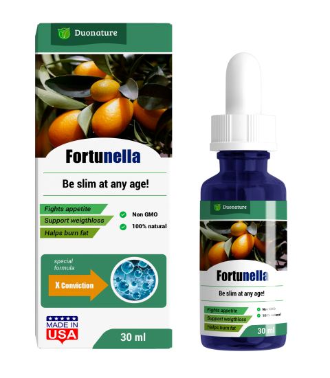
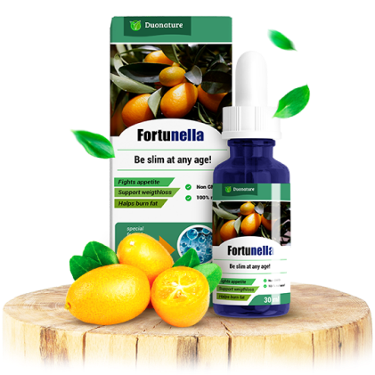
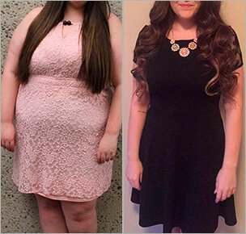

521
521  36
36Ecco, nella foto qui sotto vedete la mia paziente: Maria Nittoli*. Per lei perdere peso era veramente molto difficile. Abbiamo provato tantissimi metodi dimagranti.
* Nome e cognome sono stati cambiati su richiesta della paziente
 97 chili
97 chili
 63 chili
63 chili
Il massimo che lei è riuscita a perdere con l'aiuto di una rigorosa dieta: meno 5 chili. Dopo un mese di tale dieta Maria non ne poteva più. Non aveva più energie, tutto le cadeva dalle mani, sia al lavoro che a casa. Ha abbandonato la dieta e dopo un paio di settimane ha ripreso 7 chili.
Dopo di che, francamente, mi sono quasi rassegnata ed ero pronta a riconoscere la mia sconfitta professionale.
Come abbiamo eliminato quei chili di troppo?
Nell'ottobre dello scorso anno ho ricevuto un invito al Congresso di dietologia a Milano.
Un argomento principale, ampiamente discusso tra i dietologi, era un integratore alimentare biologico Fortunella .
Se il corpo smette di produrre energia dai carboidrati, dopo 7-10 giorni entra in uno stato dichetosi, ovvero uno stato metabolico dell'organismo, quando esso invece di ricevere energia dai carboidrati inizia a riceverla dai grassi e corpi chetonici. Si avvia la chetosi, un digiuno carboidratico delle cellule, in cui il grasso sottocutaneo viene trasformato in energia. Nel processo di chetosi, i grassi vengono divisi in acidi grassi e glicerina, che si trasformano in corpi chetonici.
I corpi chetonici, che si formano nel fegato, sono le principali fonti di energia per il corpo durante la chetosi. Alimentano i tessuti muscolari e prevengono i depositi di grasso, così la massa e il volume del corpo diminuiscono.
La chetosi si avvia in caso di esaurimento delle scorte di glicogeno nel fegato e nel tessuto muscolare. Ciò richiede il digiuno da 7 a 10 giorni. La capacità principale di Fortunella consiste nella riduzione di questo tempo fino a 40-50 minuti.
L'integratore alimentare «mette» il corpo in uno stato di chetosi in maniera sicura. Fortunella è facile da usare e garantisce una rapida riduzione del peso corporeo.
Durante la discussione, ho raccontato ai colleghi di Maria, la mia paziente difficile. Erano sicuri al 99% che questo integratore chetogenico le aiuterà.
Subito dopo essere tornata dal Congresso, ho chiamato Maria, le ho parlato di Fortunella e l'ho convinta a provare a combattere il peso per l'ultima volta. Ha accettato. E dopo i test, si è scoperto che aveva un basso livello di chetoni: 0,08 mol.
La percentuale del grasso corporeo dipende dalla quantità di chetoni nel corpo. Con l'aumento della loro concentrazione, si riducono depositi adiposi.
Con l'aiuto dell'integratore alimentare, Maria ha iniziato ad aumentare la concentrazione di corpi chetonici.
Ecco cosa possiamo leggere nel diario del suo dimagrimento:
Concentrazione di chetoni: 0,3 mol.
Concentrazione di chetoni: 0,8 mol. Perdita di peso: 5 chili.
Concentrazione di chetoni: 0,4 mol. Perdita di peso: 8 chili.
Concentrazione di chetoni: 0,5 mol. Perdita di peso: 9 chili.
Concentrazione di chetoni: 0,7 mol. Perdita di peso: 11 chili.
Concentrazione di chetoni: 0,9 mol (!). Perdita di peso: 18 chili.
Qui non sono stata soddisfatta dell'analisi, visto che si trattava di un valore di soglia, perché più di 1 mol vuol dire la chetonemia. Poi ho scoperto, che Maria ha deciso da sola di accellerare la perdita di peso, assumendo con un bicchiere d'acqua tre capsule invece di una.
Non consiglio a nessuno di fare così!
Concentrazione di chetoni: 0,6 mol. Perdita di peso: 20 chili.
Concentrazione di chetoni: 0,7 mol. Perdita di peso: 34 chili.
 97 chili
97 chili
 95 chili
95 chili
 90 chili
90 chili
 82 chili
82 chili
 73 chili
73 chili
All'inizio è difficile da credere, ma è davvero così: basta assumere una capsula con un bicchiere d'acqua 30 minuti prima dei pasti. Tutto qui.
Maria non ha cambiato lo stile di vita. Non ha rifiutato i soliti cibi. Non aveva problemi con il sonno o reazioni allergiche. Ha semplicemente aumentato e mantenuto la concentrazione di chetoni nel corpo.
Ma non c'è un grammo di fantasia in questo. La medicina ha inventato un farmaco per il mal di testa, per la disfunzione erettile, per la gravidanza... Trovare una soluzione rapida al problema dell'eccesso di peso, era solo questione di tempo.
Dimagrisci per piacere a te stessa e rispettare te stessa.
Dimagrisci per non esitare ad aggiungere nuove foto su Instagram.
Dimagrisci, così persone saranno interessate a te, non al tuo peso.
Dimagrisci, per restare in buona salute!
| ↓ | ↓ |

 50%
50%
50%
50%
50%
50%
50%
50%
50%
50%
50%
50%
50%
50%
50%
50%
50%
50%
Un altro tentativo!
Riprova, per favore!
Hai ricevuto il 50% di sconto
per il nostro prodotto!

Oh mio Dio, non posso credere ai miei occhi! Perdere peso senza rischi per la salute è il mio sogno! Ho sempre avuto problemi durante le diete. Ritardi mestruali, brufoli ... lo voglio, voglio, voglio, voglio!)))

La norma è diversa per ogni persona. Con l'obesità (dal 30-35% di grasso corporeo) 4-6% del peso corporeo o 3.6 - 9 chili al mese. Maria è chiaramente obesa. Guarda il suo diario: - 9 chili dopo la quarta settimana. Tutto OK.

Dopo la gravidanza sono ingrassata di 10 chili e non riuscivo a dimagrire. La mia amica mi ha suggerito Fortunella . Ho perso 15 chili! Il marito è molto contento. Ha iniziato a provarci con me 10 volte di più. Sembra che presto ci sarà un secondo figlio)

Non avrei avuto mai problemi con l'eccesso di peso, pensavo io fino ad avere 18 anni. Mangiavo di tutto, facevo karate e rimanevo sempre in peso ideale. Tutto è cambiato a causa delle difficoltà della vita studentesca e della mancanza di tempo. Ho smesso di fare sport e prima sono ingrassata di 5 chili, poi di 10... Così sono arrivata ad avere 37 chili in eccesso. Non notavo o non volevo notare i fianchi più grossi e le cosce sempre più imperfette. Ho iniziato a indossare abiti larghi, continuando a mangiare e sedere invece di fare qualche attività fisica. Tutto qui.…
Poi ho ricominciato a fare esercizi, ma non riuscivo ormai a perdere peso! Mi ha salvato l'integratore alimentare Fortunella meno 26 chili in 3.5 mesi!


Vittoria, come sempre, è molto interessante e utile! Ho già ordinato 10 confezioni.

Ehi gente, basta creare scalpore. Ora prendete tutto e non rimarrà nulla agli altri.

Evviva! Lo farò prendere a mio marito ciccione. Sono stanca di mandarlo in palestra. Tanto lui fa al massimo 3 allenamenti e poi smette.

Non è abbastanza. Per aumentare la concentrazione di chetoni, prendi Fortunella prima di ogni pasto.
Il mio sogno sta per avverarsi! Mangiare e non ingrassare! È pazzesco)))


A 11 anni ho avuto un'allergia post vaccinale, gonfiore degli organi interni, sono finita in terapia intensiva. Dopo l'ospedale, ho avuto uno squilibrio ormonale. Aumentavo di peso, ma all'inizio non mi sono resa conto che c'era qualcosa che non andava in me. Pesavo sempre di più. La consapevolezza che presto avrei potuto superare 100 chili sulla bilancia, mi ha quasi portato alla depressione. Ho provato tutti i metodi per dimagrire esistenti: due giorni di yogurt, due giorni di cetrioli, due giorni di petto di pollo. I chili andavano via, ma mi sentivo proprio male: stanchezza cronica, dolori di origine sconosciuta.
Fortunella ha cambiato tutto. Ho perso peso da sola, sono diventata un'altra persona!
